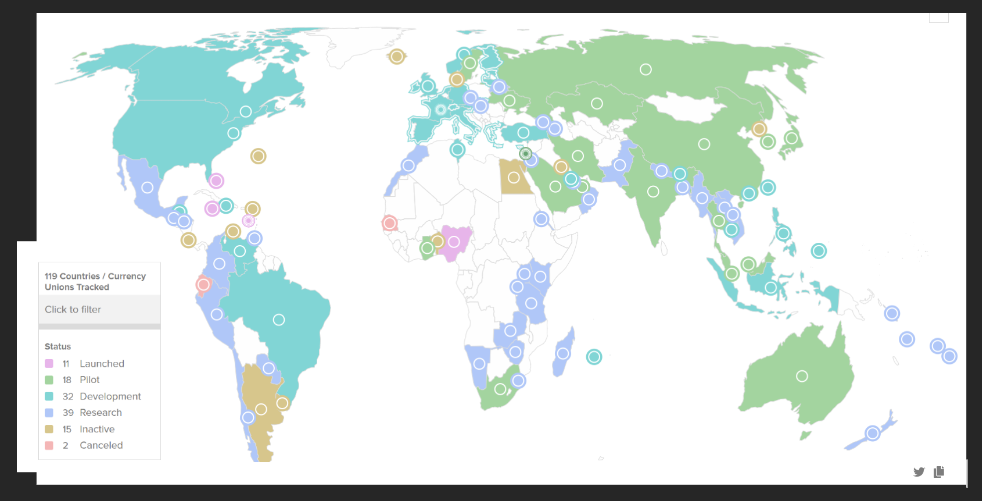
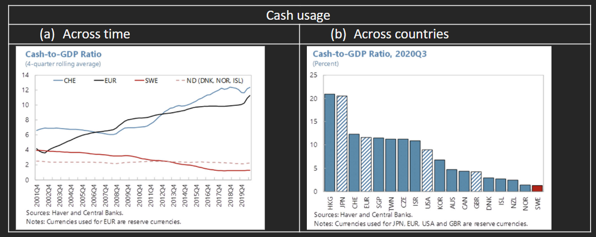
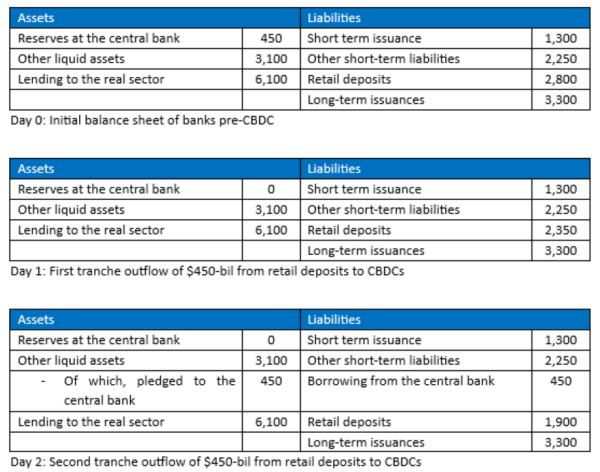
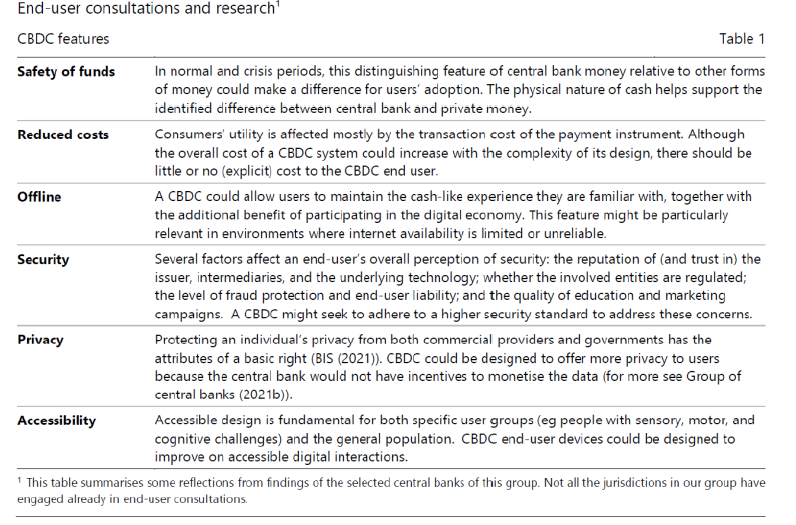
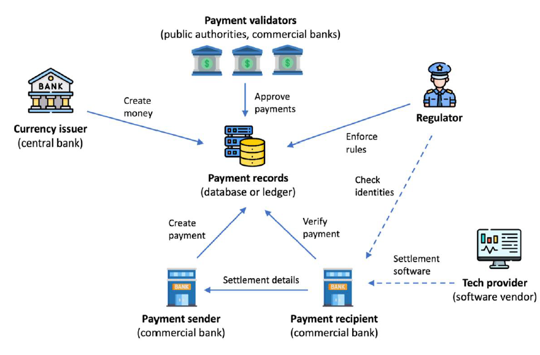
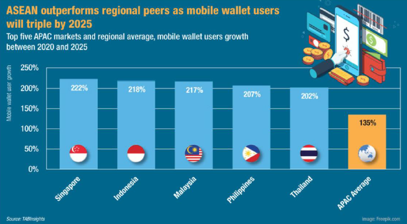
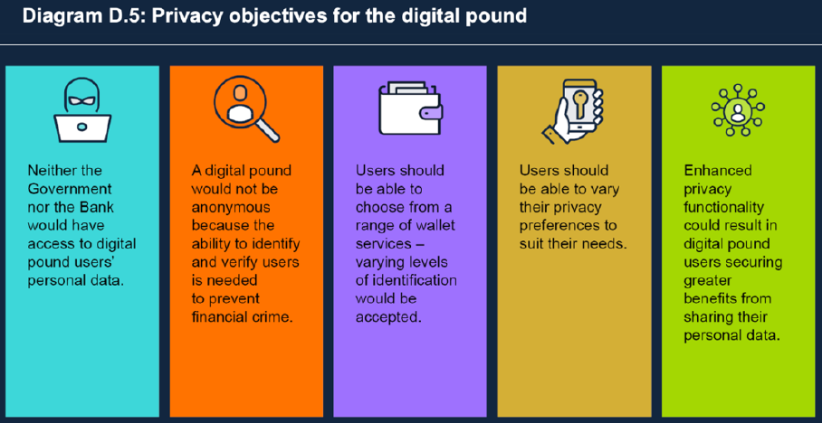
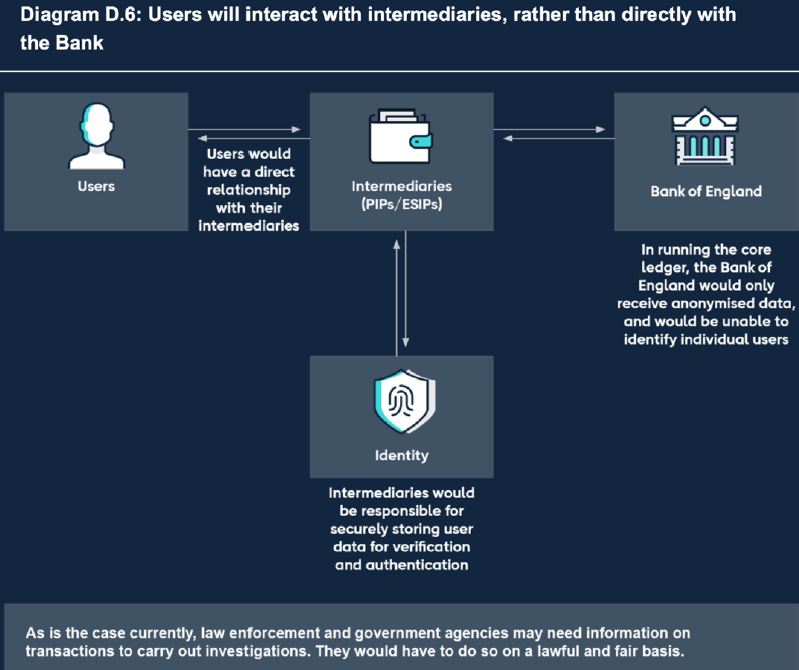

Central Bank Digital Currencies - Potential Benefits, Risks & Challenges
1. Topic
According to a research paper issued by The Bank for International Settlement in January 2020, 80% of the world’s central banks had already started to conceptualise and research the potential for CBDCs.
Please provide an account on the current development of CBDCs globally.
Please explore and assess the potential benefits, risks and challenges for CBDCs and provide suggestions to overcome such risks and challenges.
2. Introduction
This paper reviews the benefits, risks and challenges associated with central bank digital currencies (“CBDCs”).
First, we will explore developments in this space and the benefits of issuing CBDCs. Next, we will elaborate on the risks and challenges of CBDCs respectively, and the mitigating measures. Lastly, we will conclude with our views on the likely path forward for CBDCs.
3. CBDC developments and benefits
CBDCs are fiat currencies issued in a digital format by a central bank, and typically deployed on distributed ledgers that record the ownership and transfer of the currency via cryptography. Retail CBDCs are meant for use by the general public, just like notes and coins today. Wholesale CBDCs are solely for use by financial institutions to settle large-value transactions amongst themselves and the central bank, akin to present-day reserves.
CBDC developments are tracked and updated through an interactive platform created by the Atlantic Council, an American think-tank. Figure 1 shows that as of Dec 2022, 11 countries have successfully launched a CBDC, while another 89 countries are in research, development or pilot phase.

Before examining the reasons for growing interest in CBDCs, a re-cap of the technological features of digital assets would help to motivate the subsequent discussion:
Programmability: Embedding the automated behaviour of digital money through a computer program. This allows for the creation of smart contracts capable of self-executing pre-determined steps (e.g., transfers) once encoded pre-defined conditions are met (e.g., upon the receipt of an asset).
Composability: The ability to stack smart contracts on each other, or more commonly known as Lego money, which enables the combination of functions across a transaction’s value chain. This could also reduce or eliminate the need for intermediaries.
Atomicity: This describes a scenario involving two assets where the transfer of one asset depends on the transfer of the other – such that both transfers happen or neither happens; ensuring certainty.
3.1 Potential Benefits of CBDCs
Issuing CBDCs that incorporate the foregoing technological features would engender at least four potential benefits:
- First, increased efficiency in cross-border and domestic exchange, trading and transfer of financial assets (including currencies) and the associated payment and settlement of these transactions.
To be sure, features similar to those described previously (Programmability, Composability and Atomcity) already exist today.
Take the example of an interbank financial transaction:-
The reserve held by banks can be “programmed” to exchange information with other platforms via API so that a bank can timely access information on its balances. Instructions for payment, transfer and settlement are also conveyed through SWIFT messages.
Credit risks from settlement failure can be minimised through the simultaneous receipt of the payment and assets by each counterparty. Such “atomicity” is known as PvP (for currencies) and DvP (payment of currency for assets) in wholesale payment systems operated by central banks (e.g., MAS MEPS+) and regulated central counterparties such as CLS.
Smart contracts’ functionalities can already be found in margin requirements where parties are alerted to make margin top-ups to proceed with their transaction.
The equivalence of those features for retail transactions are:-
SGFINDEX, which collates account information with different banks onto one platform in Singapore;
FAST, which allows for instant payment and receipt of funds with finality; and
GIRO, which provides instruction for recurring payments.
In a cross-border setting, correspondent banks in the respective jurisdictions would facilitate the transactions.
That said, the novelty lies in the potential for the seamless integration of these features across asset classes (with asset tokenisation) and the various parts of the transactions. This reduces the need for multiple intermediaries, and hence, delays and costs. The initial results are promising. Ongoing experiments have shown CBDCs can achieve lower cost, faster settlement and increased operational transparency (e.g., wholesale CBDCs: Projects Jura, Dunbar, Mbridge; wholesale and retail CBDCs: Project Icebreaker).
- Second, prevent “cryptoisation” and protect national security of a payment system for cross-border payments against financial sanctions.
The potential efficiency gains as set out above are also applicable to stablecoins and cryptocurrenices, which could supplant fiat currencies, aptly characterised as “cryptoisation”. Notably, the introduction of Libra, a global stablecoin, by Facebook was a wake-up call for the community of central banks. Notwithstanding the assurances provided by the Libra Foundation, the prospect of a private entity supplanting the fiat currencies issued by central banks heightened concerns about the loss of monetary sovereignty and efficacy of monetary policy as well as money laundering (ML) and terrorism financing (TF). Growing interest in the use of cryptocurrencies as a form of money, serving as a medium of exchange, a store of value and an unit of account, compounded the risk of “cryptoisation”. Central banks, BIS and IMF have accordingly stepped up their efforts to ensure that fiat currencies and the associated payment systems and infrastructure remain competitive, as seen by the work done on CBDCs.
More recently, the levy of financial sanctions against Russia for its war in Ukraine, which include the removal of Russia’s entities in the use of USD cross-border payment systems, has heightened concerns about the ability of a country to conduct cross-border financial transactions. Some countries have accordingly sought to develop alternative payment networks. As noted by the Atlantic Council, there are now 9 cross-border wholesale CBDC tests and 7 cross-border retail projects, nearly double the number from 2021.
- Third, the need to support financial inclusion, leveraging on the advancement in payment technology. This also offers the potential for “leap-frogging”, as there is less of a need to ensure interoperability across legacy systems and platforms.
Such considerations are pertinent in emerging markets and developing economies (“EMDEs”) (Boar and Wehrli, 2021). An example is Bahamas. Given its sprawling archipelago of around 700 islands and pockets of sparse population, banks had found it costly to serve the populace. In addition, banks also had to adhere to onerous strict regulations relating to money laundering and terrorist financing (“ML/TF”) risks, which further increased the cost of financial services. In response, the Central Bank of the Bahamas launched the Sand Dollar, a retail CBDC, to support financial inclusion in October 2020 (Central Bank of The Bahamas, 2019).
In more advanced economies, the issuance of CBDC could also promote competition and innovation in payments markets by setting a common payment rail for payment service providers. This will guard against the formation of “walled gardens”, where payment operators engage in monopolistic behaviour to maximise network externalities at the cost of loss in interoperability and consumer choice.
- Fourth, the political need to ensure that central bank-issued fiat currency remains available as a service to the residents, especially in countries with a dwindling use of cash.
Over-reliance on the private sector for the issuance of money and the associated infrastructure could also reduce the resilience of a jurisdiction’s payment system should there be no contingency backups during a crisis. An example is the falling cash usage in Sweden, which has prompted the Riksbank to be technically prepared for the issuance of CBDCs if the need arises. As shown in Figure 2 from the 2021 IMF Article IV Consultation, Sweden’s cash usage has dropped more than halved over the past decade, falling from about 3% in 2010 to 1.3% in 2019. Relative to the other countries’ cash usage, Sweden is also the lowest.

4. Risks and mitigants
With more central banks around the world seeing a growing interest in and need for the development of CBDCs, there is a corresponding growth in the body of research into the potential risks and associated challenges in the implementation of CBDCs. These are discussed in turn, below.
4.1 Dampen Credit creation and raising credit costs
Retail CBDCs are a close substitute for bank deposits as a medium of exchange (payment) for goods and services. The extent of substitution would depend on CBDCs’ utility which, in turn, hinge on factors including transaction costs of using CBDCs for payment, perception of security and privacy of CBDC transactions.
Sizable outflows of retail deposits to CBDCs will adversely impact banks’ funding positions and Net Stable Funding Ratio (minimally 100% under Basel III rules). As depositors switch out of bank deposits into CBDCs, banks will first utilise their reserves held with the central bank to purchase central bank-issued CBDCs for sale to depositors in exchange for their bank deposits. On depletion of reserves, banks may fund CBDC purchases by borrowing from the central bank against eligible collateral. Corollary of this, (i) on the asset side of banks’ balance sheets, banks are left with a more illiquid portfolio as they exhaust their reserves and encumber their liquid securities, while (ii) on the liabilities side of their balance sheet, retail deposits (a source of stable funding) dip and borrowings from the central bank rise. Figure 3 illustrates this

Banks’ responses to a smaller funding base may have negative externalities. Banks could reduce the amount of lending to the economy, weakening credit creation. Otherwise, banks could pay a higher interest rate on retail deposits or turn to more costly wholesale funding. (MAS notes that wholesale funding of longer maturity that are at least as stable as retail deposits are typically more expensive). Contemporaneously, they may raise lending rates to preserve profitability. This results in higher credit costs for bank borrowers.
Lending rates aside, credit costs for businesses and governments may also rise should interest-bearing retail CBDCs compete with investible assets (such as commercial paper or Treasury bills) as a store of value. The magnitude of shift to retail CBDCs will largely depend on assets’ relative yields.
In turn, escalating credit costs could depress loan quantum taken out for consumption and investments, weighing on the overall growth of the economy.
4.2 Heighten financial stability risks
The introduction of CBDCs increases banks’ vulnerability to shocks as:
facing deposits flight, banks turn to more costly wholesale deposits or wholesale debt (collectively, “wholesale funding”), which are prone to runs. Crucially, the behaviour of wholesale fund providers versus retail depositors differs starkly. The ‘stickiness’ of retail deposits is well-established, and withdrawals are largely prompted by individual depositor’s liquidity needs. A 2010 study by the European Central Bank found that the availability of noisy and costless public signals on bank quality (such as credit ratings for mortgage-backed securities or peer bank metrics) dis-incentivises wholesale fund provider from engaging in costly self-directed monitoring of the bank and increases their tendency to withdraw funds based on negative public signals, particularly if they are senior claimants to the liquidated assets. A joint paper by NYU, Princeton University and the US Federal Reserve noted that at the onset of the Global Financial Crisis, retail markets remained relatively stable while wholesale funding markets experienced dry-ups and runs. The spectre of wholesale funding run was also poignantly illustrated by the recent fallout of Silicon Valley Bank.
banks engage in risky activities to preserve net interest margin (“NIM”).To meet market expectations on profitability, banks may engage in higher yielding but risker activities to offset increased funding costs.
banks that are unable to pass on rising funding costs in the form of higher lending rates to borrowers face a thinning capital stack, which reduces their resilience to shocks. This is because retained earnings (including profits) form part of a bank’s CET1 capital stock available for loss absorption.
CBDCs also increase the likelihood of bank runs. In stress periods involving concerns about bank solvency, the run from bank deposits are expected to amplify, aided by the ease of convertibility to CBDCs. This will subject banks to liquidity strains that could overwhelm present regulatory safeguards (e.g., Liquidity Coverage Ratio).
Should a liquidity crisis come to pass, the central bank’s role as the lender of last resort (“LOLR”) to backstop the banking sector will be limited by two key constraints, as historical events have spotlighted:
Lend with sufficient collateral: In the case of Lehman Brothers, former Chairman Bernanke testified that the Federal Reserve’s sole available tool was to provide short term liquidity against adequate collateral, and (Lehman’s) available collateral fell well short of the amount needed to secure a Federal Reserve loan of sufficient size to meet its funding needs. As the Federal Reserve cannot make an unsecured loan… the firm’s failure was, unfortunately, unavoidable.”
Full recourse to the borrower: During the 2008 run on money market funds (“MMFs”), MMFs were averse to borrowing from a proposed lending facility by the US Federal Reserve due to the “full recourse” clause. Remaining shareholders were likely to accelerate their exit on concerns that their claims would be subordinated to the Federal Reserve.
En masse substitution of bank deposits for CBDCs in an extreme stress scenario may force central banks to seek ways to return funds to the economy. Doing so by way of unsecured lending to banks (without receiving eligible collateral) will significantly increase central banks’ exposure to credit and liquidity risks. There are also moral hazard risks to central banks being the final arbiter disbursing funds.
4.2.1 Solution(s)
The common thread of the foregoing risks of dampened credit creation, rising credit costs and heightened financial stability risks is the sizable and abrupt displacement of bank deposits with CBDCs, and relatedly, the potential for bank disintermediation.
These risks may be mitigated in three ways:-
First, central banks could design CBDCs to bear zero interest, pari passu with cash which pays a nominal interest rate of zero. This also ensures that interest-bearing bank deposits and investible assets are more compelling as a store of value. In a negative interest rate environment, central banks could program into CBDCs a surcharge for holding CBDC balances.
Second, central banks could cap the amount of CBDCs that an end user can hold, at a point in time. This limits the maximum potential aggregate outflow of deposits, stabilises banks’ deposit base and mitigates steepening credit costs that would disincentivise the pursuing of productive economic activities.
Third, central banks could constrain the amount of CBDCs that an end user can accumulate, over a period. This measure would slow down the velocity of bank outflows to CBDCs and the speed of bank runs.
In the first two measures above, end users can be tracked from unique identifiers such as social security number. However, imposing quantitative caps, could curtail the use of CBDCs as an efficient means of payment for domestic and cross-border transactions. In advanced economies where cheap and fast payments are already widely available domestically, we expect quantitative caps to be confined to retail, and not wholesale, CBDCs.
4.3 Adverse impact on monetary policy instrument
Issuance of CBDCs may reduce the robustness of a central bank’s monetary policy instrument. We illustrate the foregoing in the context of Singapore. A Singapore dollar CBDC that is universally accessible and elastically supplied (that is, available on demand in unlimited amounts) may draw non-residents, raising their holdings of Singapore dollar substantially in the process. A surge in the level and volatility of capital flows may cause the S$NEER to more frequently depart from a level consistent with domestic price stability, leading to an uptick in instances where MAS has to intervene in the foreign exchange market. FX intervention operation would also lead to the accumulation or drawdown of Singapore’s Official Foreign Reserves.
4.3.1 Solution(s)
Central banks operating exchange-rate centred frameworks could consider restricting retail CBDC access to domestic residents, or introduce time-bound access CBDCs for tourists or short-term visitors. Implementation wise, these central banks could for instance program CBDCs for use within certain geolocation co-ordinates.
5. Challenges and workarounds
The risks highlighted above are predicated on sizeable use of CBDCs post-implementation.
However, there remains some key challenges for CBDCs that would need to be addressed before CBDCs would be viable for use.
5.1 Legal Framework
Central bank law and monetary law are two critical public law aspects of CBDCs.
5.1.1 Relevance of Central Bank Law
Central bank law establishes central bank bodies and prescribe their mandate. The equivalence in Singapore’s context is the Monetary Authority of Singapore Act 1970, which establishes MAS as a body corporate under s3 and lists MAS’ principal objects and functions under s4 thereto.
Central banks must have the mandate to issue CBDCs which are ultimately a liability on their books, and the issuance of unauthorised CBDCs will bring forth legal, financial and reputational risks for central banks.
Whether central banks possess such mandate to issue CBDCs rests on (i) their prescribed functions and (ii) their powers to carry out those functions. Crucially, the issuance of CBDCs must be within the scope of central banks’ statutory functions and central banks must be legally empowered to issue CBDCs. The design features of CBDC could impinge on the interpretation of the existing legislation, such that amendments to the relevant laws may be required for the issuance of CBDC.
For instance, CBDCs can be account-based or token-based. Account-based CBDCs are balances in cash current accounts in a central bank’s books. Token-based CBDCs are digital tokens and do not involve an account-type relationship between the central bank and CBDC token holder.
The issuance of token-based CBDCs may be construed as falling outside of central banks’ statutory functions to issue “banknotes and coins”. Relatedly, central banks may only be empowered to issue “banknotes and coins”, and any action to issue token-based CBDCs are ultra-vires of powers conferred upon them. IMF, in a 2020 publication, noted that current central bank laws for 61% out of 171 IMF-member central banks limit their currency issuance function to “banknotes and coins”, 23% explicitly permit the issuance of currency in a digital format, and the remaining 16% central bank laws are unclear.
In the same publication, IMF also highlighted that debate persists over whether central banks are legally authorised to grant the general public access to its payment systems in order to hold account-based retail CBDCs, as part of central banks’ statutory functions to operate and oversee payment systems. IMF noted that 85% of central bank laws today permit central banks to open accounts for institutions only and not for the public.
5.1.2 Relevance of Monetary Law
Monetary law refers to the legislative and regulatory framework for use of monetary value to be legally valid for the purpose of extinguishing debt or other monetary obligations. The equivalence in Singapore’s context is the Currency Act 1967, which prescribes in s13(1) that currency notes and coins issued by MAS are legal tender in Singapore. Legal tender status obliges creditors to accept the currency for payment.
Legal tender status is a matter of designation via legislation, by central banks. Importantly, not all means of payment (for instance, commercial bank balances) have legal tender status which explains why businesses have the option to only accept cash for payment.
The pertinent question here is whether CBDCs should be accorded legal tender status. It is unclear if not doing so would reduce the adoption rate of CBDCs, as deposit money do not have legal tender status but yet are widely used as a reliable means of payment. That said, there may be a case to do so to strike an equivalence with notes and notes issued by a central bank.
5.1.3 Solution(s)
Although legislative amendments would easily fix the issues above (e.g., paragraph 35 explains that legal tender status is a matter of legal designation), the first-order question is whether there is a compelling case for amending current central bank law and monetary law, and the implications of any amendments on other legislations, including contract laws.
5.2 Mass adoption
There is considerable uncertainty over the adoption rate of CBDCs. Two years post debut, Bahamas’ Sand Dollar has seen only modest take-up. The Central Bank of Bahamas publicly attributed low CBDC penetration to the presence of alternative payment means available such as e-money and credit/debit cards and COVID-19 which stymied education outreach efforts. IMF, in a Spring 2021 report, noted only $130,000 worth of sand dollars was in circulation compared with $500-mil Bahamian dollars. As of end 2021, this increased to $800,000 according to the 2021 annual report of The Central Bank of the Bahamas.
Figure 4 enumerates findings from selected central banks (based on their end-user consultations) on retail CBDC features that end-users consider important. In summary, they pertain to (i) safety of funds, (ii) usage costs such as transaction costs, (ii) ease of use, (iv) security of transactions (including end-user liability and whether the intermediaries in a CBDC transaction are regulated), (v) privacy, and (v) accessibility.

Merchants’ acceptance would rise if CBDCs could either widen their customer base or lower their existing costs of transactions.
5.2.1 Solution(s)
To encourage end-users’ adoption, CBDCs should be designed with reference to the features in Figure 4. For instance, CBDCs could enhance its accessibility by incorporating voice or assistive touch commands for users who are visually and/or physically impaired. Next, user experience (ease of use and convenience) could influence the public’s reception to using CBDCs. Linking end-user’ identities to their existing mobile phone numbers to streamline password proliferation or authenticating users through facial recognition, could also enhance a user’s CBDC journey. Central banks may benefit from collaborations with commercial banks and private payment service providers on design matters.
As mentioned, merchants would be concerned about costs of accepting and / or making CBDC payments, which include costs to install and maintaining bespoke hardware. These costs should be competitive when compared to costs of using existing payment facilities and payment services offered by third-party payment rails, such as payment card companies.
The implementation of CBDCs and its ecosystem should be done in a manner and form that is familiar and compatible with existing tools, technology, and conditions. This may require:
Integrating CBDC payments into existing Point-of-Sales infrastructure or applications
Partnerships with private sectors, e.g., telco providers. to provide affordable payment services to users
Subsidies to lower merchant’s implementation costs
Ensuring compatibility with existing devices, e.g., smart phones, wearables, stored-Value cards, and
Availability in offline or low-connectivity environments.
As an example of the above, the People’s Bank of China (“PBOC”) teamed up with WeChat (China’s social media platform giant) to add e-CNY (China’s CBDC) to WeChat’s payment services.
CoinTelegraph reported, in a 2023 publication, that end-users must authorise the e-CNY wallet operator to sync their WeChat mobile phone number, for activation of WeChat’s payment wallet fast payment function. Thereafter, payments to digital yuan-supporting merchants, such as McDonalds, can be made using the WeChat app.
5.3 Interoperability
Interoperability is vital to payment systems, enabling them to seamlessly exchange information and facilitate transactions. This in turn would boost CBDC adoption rates.
One significant barrier to interoperability is technical incongruities such as difference in message formats, data elements, operating systems, security protocols, scalability, or throughput capacity. These incompatibilities can hinder seamless interaction between existing payment systems and CBDC systems. On their part, existing payment system participants may be reluctant to make large investments to adapt technical specifications in legacy infrastructure to CBDC systems.
Legal and regulatory barriers can also inhibit interoperability between existing payment systems and CBDC systems. These challenges can stem from different supervisory regimes, compliance requirements, and consumer protection rules. For instance, the transfer of CBDCs from one country to another entails compliance with both countries’ legal requirements (e.g., over ML/TF or data protection) which may not yet be harmonised.
5.3.1 Solution(s)
To address frictions from interoperability, the following approaches could be considered:
Adopt common technical standards and APIs: Utilizing common technical standards and APIs could enhance compatibility between present-day payment systems and CBDC systems, reduce technical barriers to interoperability and facilitate seamless CBDC transactions between systems.
Incentivise participation: Central banks could encourage participation in the CBDC ecosystem by offering benefits such as lower transaction costs, enhanced security, or streamlined processes. CNBC in 2021 reported on PBOC’s novel approach of parcelling out RMB 40-mil of e-CNY in a lottery. Up to 200,000 red packets containing RMB 200 dollars each could be won by Beijing residents.
Establish rules for CBDC payments during closing hours: Central banks must establish rules to handle CBDC payments initiated during the closing hours of non-CBDC payment systems with a view to improving the availability of CBDCs and enhancing integration into existing payment systems.
Consider sharing infrastructure: Central banks could review the feasibility of building a common platform that embeds the sharing of functions, such as using the same authorization and clearing providers or digital identity schemes.
5.4 Privacy, Data Security and Cybersecurity Challenges
All digital transactions, including CBDC transactions, would leave a digital trail including personal data that is in turn, susceptible to leakage and exploitation by malicious actors. Addressing privacy risks and cybersecurity concerns in the use of CBDCs is therefore not a matter of ensuring anonymity as physical cash would be able to, but rather a matter of maintaining two key principles of:
Authentication and Authorization where only the CBDC’s legitimate owner should be able access and spend CBDC.
Privacy and Confidentiality where private information about the CBDC transaction and parties involved should not be visible to unauthorized persons.
Notably, a major concern arising from a Central Bank administered digital currency is State surveillance. The access to personal data may potentially pave the way for the state to adopt Big Brother-esque surveillance of all actions and transactions performed by individuals or corporates and to take punitive action. The Financial Times, in 2021, reported that the PBOC can, “track large-value transactions at the individual level in real time [and] Beijing aims to use this feature to combat money laundering, corruption and the financing of ‘terrorism’ at home”.
Issuance of CBDCs may also entail “centralized collection of transaction data, posing major security risks” (Fanti et al, 2022 Sep). Even if the state does not attempt to conduct surveillance, a centralized repository of data would represent high value targets for malicious actors. Reliance on third party tech providers (see Figure 5) to maintain the centralized database may also introduce vulnerabilities especially if said third parties are not subject to stringent regulatory frameworks governing operational and cyber resilience.

5.4.1 Solution(s)
Privacy, data security and cybersecurity concerns associated with CBDCs are not new or unique. Nor are they insurmountable given the plethora of safe and secured services offered by the prevailing digital wallets and private payments service providers.
The rapid adoption of digital wallets signals that users are willing to cede some of their privacy rights in exchange for value-added services. Correspondingly, a strong use case for CBDCs with sufficient security measures would be able to attract user adoption while tempering privacy concerns. The Asian Banker estimates that based on current growth rates, mobile wallets will reach 2.6 billion users by 2025. Typically, the success of these private wallets lies in their ability to become “embedded in [their users’s] daily lives when [the wallets] are part of ecosystems […] extending into e-commerce, ride hailing, food delivery, messaging, travel, [etc.]” (Chaudhuri et al, 2022). See Figure 6.

CBDCs’ build should replicate minimally “the same level of privacy as a bank account” (Bank of England, 2023). A possible compromise between true anonymity in cash transactions and a Central Bank administered CBDC would be to adopt an ‘intermediated account-based CBDC model’, as suggested in BOE’s digital pound consultation paper. See Figure 7.

Notably, maintaining CBDC accounts with an intermediary such as a bank or payment service provider would remove the Central Bank as a direct administrator of personal data generated while providing a familiar means to fulfil the two key principles outlined in paragraph 49 above. That is, the intermediary would serve as an administrator to identify users for authentication and authorization, and likewise protect data privacy and confidentiality in compliance with data protection laws and regulations. Specifically, such a two-tier arrangement would address concerns about the State intruding on personal privacy and confidentiality apart from the necessary provisions to obtain information to deter and detect financial crimes. For example, s47(1) of the Banking Act 1970 in Singapore restrict disclosure by banks of customer information “except as expressly provided in (this) Act”, where the exceptions relate to the need to fight financial crimes.

Further technical features, notably Privacy Enhancing Technologies, can also be applied to anonymise data transmitted or shared by intermediaries with the Central Bank. There are several techniques that may work concurrently (BOE, 2023) :
Data Minimisation techniques which aims to hide personal information that may be tied to the CBDC transaction behind ciphers or pseudonyms, based on operator-defined thresholds. Specifically, the CBDC operator “could permit only certain types of transaction to be executed without registering the identity of payer and payee” (ECB, 2020), and collect more identification and personal data only if transactions cross a pre-defined threshold value.
Aggregate Data Analysis which functions on the use of Differential Privacy (on the latter, “an algorithm is said to be differentially private if by looking at the output, one cannot tell whether any individual’s data was included in the original dataset or not” (Harvard University n.d.)), and it is achieved by introducing statistical noise that adjusts the output variance when the input changes (Devaux, 2022). Adopting Aggregate Data Analysis would mean that any data that is shared with authorized parties would involve aggregated formats where individual CBDC users cannot be identified.
Blind proofs or Zero-knowledge (range) proofs, “where one party can prove to another party that a given statement is true without revealing any additional data apart from the fact that the statement is indeed true.” (BOE, 2023) This would minimize the need to transmit and share personal information in order to confirm CBDC transactions.
5.5 Implementation challenge – operating CBDCs on top of DLT to reap benefits brings forth key risks including settlement risks
CBDCs may either operate using (i) Distributed Ledger Technology (“DLT”) or (ii) the traditional core ledger system with supporting infrastructure and rules.
Adopting DLT for CBDC systems could present both benefits and challenges.
5.5.1 Benefits
DLT ensures the consistency and integrity of data records by being maintained by multiple nodes, avoiding the single-point-of-failure and risks associated with centralized solutions. DLT also provides better scalability by increasing dedicated computing nodes.
5.5.2 Challenges
Reduced privacy and confidentiality: DLT have less privacy and confidentiality. E.g., public blockchains like Bitcoin and Ethereum offer complete transaction (but not identity of users) transparency This concern is reduced, but not fully abated, even in a permissioned environment.,
Uncertainty over settlement finality: Settlement finality refers to the point in time where one party is deemed to have discharged his obligation or transferred his asset in satisfaction of his obligation, and such discharge or transfer is irrevocable even if his counterparty becomes insolvent or bankrupt.
Principle 8 to BIS’ Principles for Financial Market Infrastructures (“FMIs”) calls for FMIs to provide “clear and certain final settlement”, minimally by end of the value date. In DLT arrangements, the point where settlement finality is reached may not be clear or well-defined, particularly in distributed networks that rely on a consensus process (such as Proof-of-Work) for inclusion of a transaction to the ledger. In such distributed networks, transaction confirmations are not immediate, and the potential for forks or chain reorganizations can cast doubt on the irreversibility of transactions.
Increased network governance difficulties: DLT’s huge amounts of distributed computing nodes pose network governance challenges.
Need for technical talent: DLT needs broader support and more technical talent since it is built on a more complex infrastructure.
5.5.3 Solution(s)
Alternative consensus mechanisms, such as Proof of Stake or federated Byzantine agreement systems, could offer greater certainty concerning transaction finality, thus minimizing the likelihood of forks or chain reorganizations.
6. Conclusion
Starting from first principles, CBDCs are no different from the reserves and cash issued by a central bank to operationalise the concept of money as a medium of exchange, a unit of account and a store of value. That said, as this paper has highlighted, the novel technological features undergirding CBDCs present the potential for the record, payment, transfer and settlement of money to be made more efficient and more robust with a reduced need for intermediaries.
The same features also bring along new challenges and risks. These include privacy issues, cybersecurity considerations, disintermediation of banks and financial stability implications. Conceptually, some of the challenges and risks could be addressed by the appropriate calibration of the design parameters, such as having a cap on retail CBDC holdings and paying zero interest to prevent bank disintermediation.
More work would need to be done to better understand the full extent of benefits as well as challenges and risks even notwithstanding numerous central bank experiments thus far. Specifically, the litmus test of CBDCs to function as money will be its ability to scale securely and cost-effectively while maintaining the same benefits seen at the proof-of-concept stage.
7. References
Atlanticcouncil.org. (2022). Central Bank Digital Currency Tracker. Retrieved March 18, 2023, from https://www.atlanticcouncil.org/cbdctracker
Ball, L. (2016, August 24). The Fed and Lehman Brothers: A new narrative. Retrieved March 18, 2023, https://cepr.org/voxeu/columns/fed-and-lehman-brothers-new-narrative
Banescu, S., Borodach, B., & Lannquist, A. (2021, November 20). 4 key cyber security threats to the new Central Bank Digital Currencies. World Economic Forum. Retrieved March 17, 2023 from https://www.weforum.org/agenda/2021/11/4-key-threats-central-bank-digital-currencies/
Bank of England. (2023, February 7). The digital pound: Technology working paper. Bank of England. Retrieved March 17, 2023 from https://www.bankofengland.co.uk/paper/2023/the-digital-pound-technology-working-paper
Bank of England. (2023, March 10). The digital pound: A new form of money for households and businesses? Bank of England. Retrieved March 15, 2023, from https://www.bankofengland.co.uk/paper/2023/the-digital-pound-consultation-paper
Bis.org. (2021). Central bank digital currencies: user needs and adoption. Retrieved March 18, 2023, from https://www.bis.org/publ/othp42_user_needs.pdf
Bis.org. (2022, April). Central bank digital currencies: a new tool in the financial inclusion toolkit? Retrieved March 18, 2023, from https://www.bis.org/fsi/publ/insights41.pdf
Bis.org. (2021, September). Central bank digital currencies: system design and interoperability. Retrieved March 18, 2023, from https://www.bis.org/publ/othp42_system_design.pdf
Central Bank Bahamas. (n.d.a) 2021 annual report. Retrieved March 18, 2023, from https://www.centralbankbahamas.com/viewPDF/documents/2022-05-05-11-51-31-CBOB-2021-Annual-Report-and-Financial-Statements.pdf
Carlson, M., Duygan-Bump, B., Nelson, W.R. (2015, February). BIS Working Papers No 493. Why do we need both liquidity regulations and a lender of last resort? A perspective from Federal Reserve lending during the 2007–09 US financial crisis. Retrieved March 18, 2023, from https://www.bis.org/publ/work493.pdf
Chaudhuri, R., Gathinji, C., Tayar, G., & Williams, E. (2022, October 13). Sustaining Digital Payments Growth: Winning models in emerging markets. McKinsey & Company. Retrieved March 15, 2023, from https://www.mckinsey.com/industries/financial-services/our-insights/sustaining-digital-payments-growth-winning-models-in-emerging-markets
Devaux, E. (2022, December 21). What is differential privacy: Definition, mechanisms, and examples. Statice. Retrieved March 17, 2023, from https://www.statice.ai/post/what-is-differential-privacy-definition-mechanisms-examples
Dorst, S. (Spring 2021). Digital dollars for online tea. Retrieved March 18, 2023, from https://www.imf.org/external/pubs/ft/fandd/2021/03/fighting-pandemic-disruption-with-innovation-dorst.htm
European Central Bank. (2010, July). Working Paper Series No 1223 - The dark side of bank wholesale funding. Retrieved March 18, 2023, from https://www.ecb.europa.eu/pub/pdf/scpwps/ecbwp1223.pdf
European Central Bank. (2020, October). Report on a Digital Euro - European Central Bank. European Central Bank. Retrieved March 17, 2023, from https://www.ecb.europa.eu/pub/pdf/other/Report_on_a_digital_euro~4d7268b458.en.pdf
Fanti, G., Lipsky, J., & Moehr, O. (2022, September). Central Bankers’ new cybersecurity challenge. International Monetary Fund. Retrieved March 15, 2023, from https://www.imf.org/en/Publications/fandd/issues/2022/09/Central-bankers-new-cybersecurity-challenge-Fanti-Lipsky-Moehr
Fanti, G., Kostiainen, K., Howlett, W., Lipsky, J., Moehr, O., Schnapper-Casteras, J. P., & Wolff, J. (2022, June 5). Missing key: The challenge of cybersecurity and Central Bank Digital Currency. Atlantic Council. Retrieved March 17, 2023, from https://www.atlanticcouncil.org/in-depth-research-reports/report/missing-key/#chapter1
Federalreserve.gov. (2021, Jun 23). Fed Notes – What is programmable money? Retrieved March 18, 2023, from https://www.federalreserve.gov/econres/notes/feds-notes/what-is-programmable-money-20210623.html
Gertler. M., Kiyotaki. N., Prestipino, A. (2015, November). Wholesale Banking and Bank Runs in Macroeconomic Modelling of Financial Crises. Retrieved March 18, 2023, from https://www.princeton.edu/~kiyotaki/papers/GKP11092015_.pdf
Hansen, T., & Delak, K. (2022, March 2). Security considerations for a central bank digital currency. The Fed - Security Considerations for a Central Bank Digital Currency. Retrieved March 17, 2023, from https://www.federalreserve.gov/econres/notes/feds-notes/security-considerations-for-a-central-bank-digital-currency-20220203.html
Harvard University. (n.d.). Differential Privacy. Harvard University Privacy Tools Project. Retrieved March 17, 2023, from https://privacytools.seas.harvard.edu/differential-privacy
Kaissi, N. (2021, October 28). Mobile wallets will reach 2.6 billion users in Asia Pacific by 2025. The Asian Banker. Retrieved March 17, 2023, from https://www.theasianbanker.com/updates-and-articles/mobile-wallet-will-reach-2.6-billion-users-in-asia-pacific-by-2025
Kharpal, A. (2021, June 2). China to hand out $6.2 million in digital currency to Beijing residents as part of trial. Retrieved March 18, 2023, from https://www.cnbc.com/2021/06/02/china-digital-currency-beijing-to-hand-out-6point2-million-in-trial.html
Kynge, J., & Yu, S. (2021, February 17). Virtual control: The agenda behind China’s new digital currency. Financial Times. Retrieved March 15, 2023, from https://www.ft.com/content/7511809e-827e-4526-81ad-ae83f405f623
Mas.gov.sg. (2021, Nov 9). A Retail Central Bank Digital Currency (CBDC): Economic Considerations in the Singapore Context. Retrieved March 18, 2023, from https://www.mas.gov.sg/publications/monographs-or-information-paper/2021/retail-cbdc-paper
Nwaokocha, A. (2023, March 7). WeChat integrates digital yuan into its payment platform Retrieved March 18, 2023, from https://cointelegraph.com/news/wechat-integrates-digital-yuan-into-its-payment-platform
R3.com. (2020, April). Central Bank Digital Currency: an innovation in payments. Retrieved March 18, 2023, from https://www.r3.com/wp-content/uploads/2020/04/r3_CBDC_report.pdf >
World Bank Group. (2022, June 28). Covid-19 drives global surge in use of digital payments. World Bank. Retrieved March 15, 2023, from https://www.worldbank.org/en/news/press-release/2022/06/29/covid-19-drives-global-surge-in-use-of-digital-payments
Yoshinaga, A., et al. (2020, November 20). Legal Aspects of Central Bank Digital Currency: Central Bank and Monetary Law Considerations. Retrieved March 18, 2023, from https://www.imf.org/en/Publications/WP/Issues/2020/11/20/Legal-Aspects-of-Central-Bank-Digital-Currency-Central-Bank-and-Monetary-Law-Considerations-49827